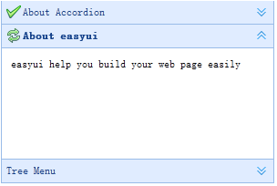

Override defaults with $.fn.accordion.defaults.
The accordion allows you to provide multiple panels and display one at a time. Each panel has built-in support for expanding and collapsing. Clicking on a panel header to expand or collapse that panel body. The panel content can be loaded via ajax by specifying a 'href' property. Users can define a panel to be selected. If it is not specified, then the first panel is taken by default.
Create accordion via markup, add 'easyui-accordion' class to <div/> markup.
- <div id="aa" class="easyui-accordion" style="width:300px;height:200px;">
- <div title="Title1" data-options="iconCls:'icon-save'" style="overflow:auto;padding:10px;">
- <h3 style="color:#0099FF;">Accordion for jQuery</h3>
- <p>Accordion is a part of easyui framework for jQuery.
- It lets you define your accordion component on web page more easily.</p>
- </div>
- <div title="Title2" data-options="iconCls:'icon-reload',selected:true" style="padding:10px;">
- content2
- </div>
- <div title="Title3">
- content3
- </div>
- </div>
We can change or recreate accordion later and modify some features.
- $('#aa').accordion({
- animate:false
- });
Call 'getSelected' method to get the current panel and then we can call 'refresh' method of panel to load new content.
- var pp = $('#aa').accordion('getSelected'); // get the selected panel
- if (pp){
- pp.panel('refresh','new_content.php'); // call 'refresh' method to load new content
- }
| Name | Type | Description | Default |
|---|---|---|---|
| width | number | The width of accordion container. | auto |
| height | number | The height of accordion container. | auto |
| fit | boolean | Set to true to set the accordion container size fit it's parent container. | false |
| border | boolean | Defines if to show the border. | true |
| animate | boolean | Defines if to show animation effect when expand or collapse panel. | true |
The accordion panel options is inhirited from panel, below is the addition properties:
| Name | Type | Description | Default |
|---|---|---|---|
| selected | boolean | Set to true to expand the panel. | false |
| Name | Parameters | Description |
|---|---|---|
| onSelect | title,index | Fires when a panel is selected. |
| onAdd | title,index | Fires when a new panel is added. |
| onBeforeRemove | title,index | Fires before a panel is removed, return false to cancel the remove action. |
| onRemove | title,index | Fires when a panel is removed. |
| Name | Parameter | Description |
|---|---|---|
| options | none | Return the options of accordion. |
| panels | none | Get all panels. |
| resize | none | Resize the accordion. |
| getSelected | none | Get the selected panel. |
| getPanel | which | Get the specified panel. The 'which' parameter can be the title or index of panel. |
| getPanelIndex | panel |
Get the specified panel index. This method is available since version 1.3.
The example below shows how to get the selected panel index. var p = $('#aa').accordion('getSelected');
if (p){
var index = $('#aa').accordion('getPanelIndex', p);
alert(index);
}
|
| select | which | Select the specified panel. The 'which' parameter can be the title or index of panel. |
| add | options |
Add a new panel. By default the added panel will become selected.
To add a unselected new panel, pass the 'selected' property and set it to false.
Code example: $('#aa').accordion('add', {
title: 'New Title',
content: 'New Content',
selected: false
});
|
| remove | which | Remove the specified panel. The 'which' parameter can be the title or index of panel. |